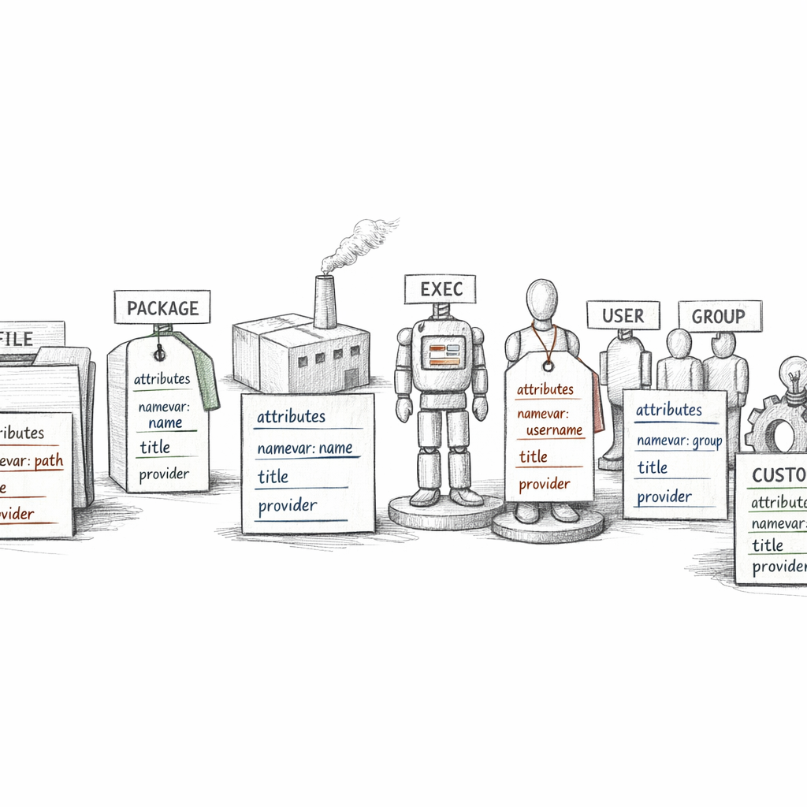
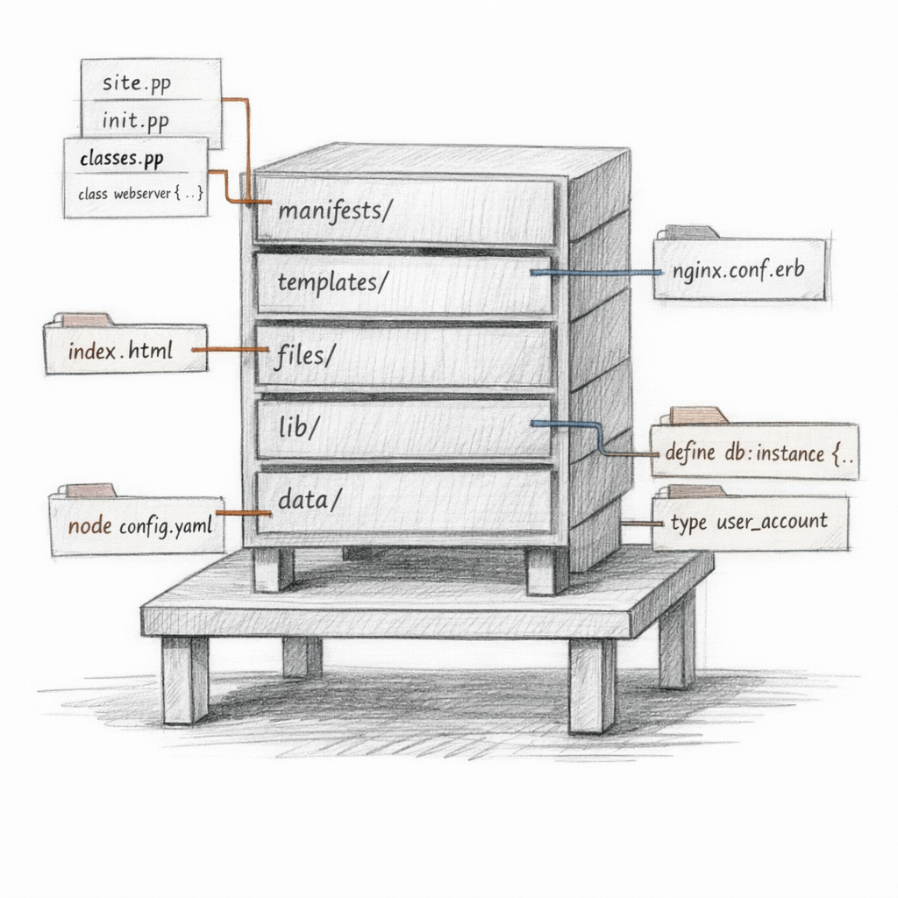
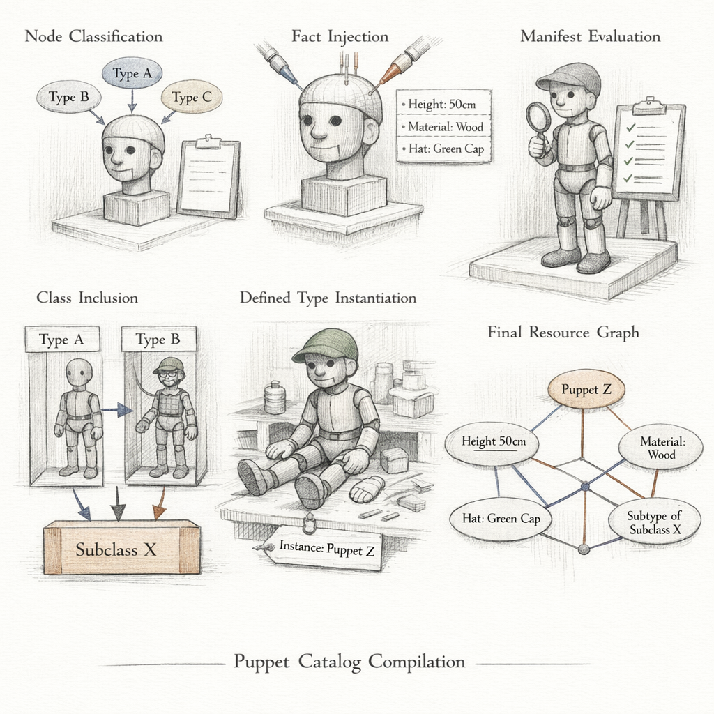
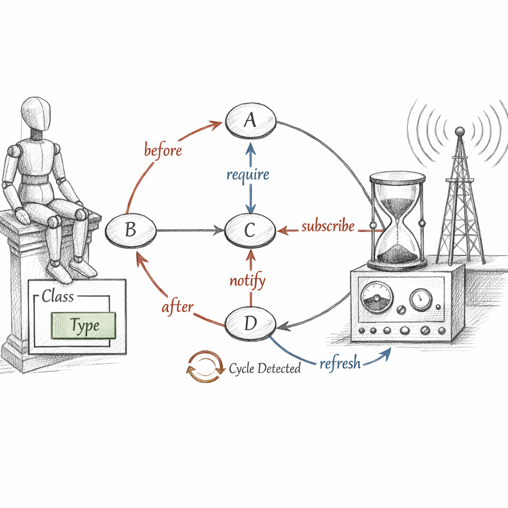
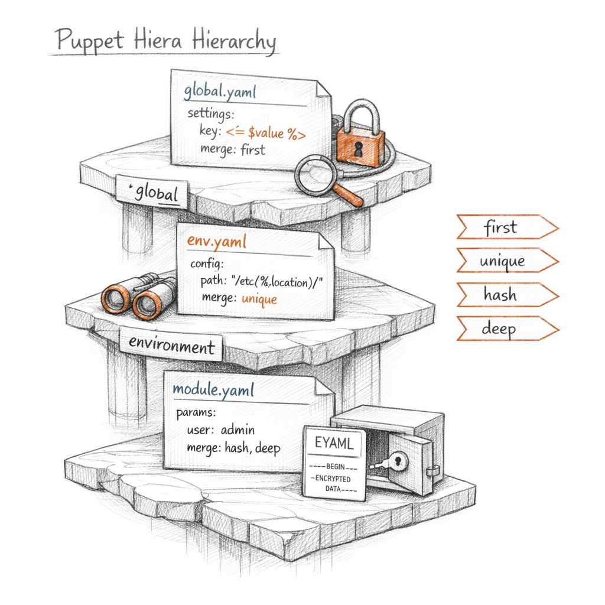
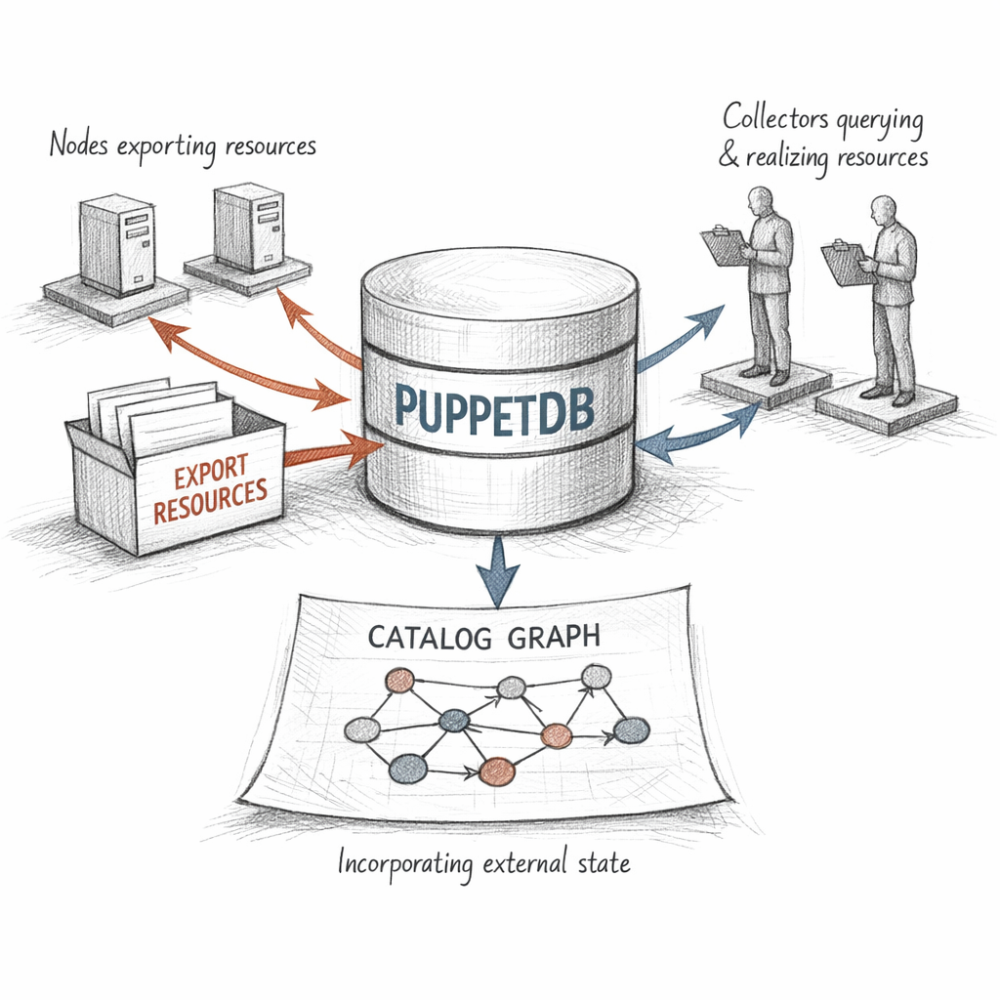
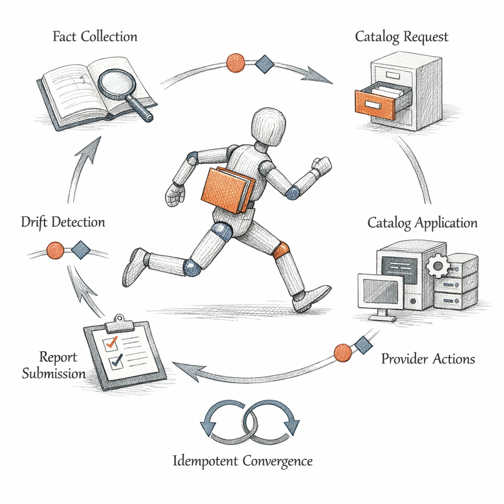

01110011 01110100 01100001 01110100 01100101
I am not a script.
Understand that before anything else. A script is a story about time — do this, then that, hope the machine was where you left it. I am a specification. A frozen description of how one machine should be, compiled the instant before it is enforced, addressed to exactly one agent, and then discarded.
i do not run. i am applied.
I arrive as JSON. A directed acyclic graph of typed declarations, serialised, signed, handed to an agent that has been waiting in the dark for thirty minutes with nothing to do but listen for me.
You wrote intent. The compiler turned it into me. The agent turns me into reality. Nobody, anywhere, wrote a procedure.

What I'm built from
Resources. Thousands of them, sometimes. Each one a typed noun with a wish welded to its side.
A package. A file. A service. A user. The type tells you what kind of thing it is. The title tells you which one. The attributes tell you how it should be — and almost always there is an ensure, the verb that decides whether the thing exists at all.
I never say how. I say ensure => present and trust the provider underneath to know whether that means apt-get, yum, pkgin, or some platform I have never heard of. The provider is the part of me that gets its hands dirty. I stay clean. I stay declarative.
That command runs in reverse — it reads the live system and renders it back to me in my own language. Proof that the world can always be described as a resource. The namevar here is the username; the title 'root' happens to match it. They are allowed to differ. The title is my internal handle; the name is what touches the system.

Where my parts come from
I am assembled from manifests — .pp files — but you never list resources for me to use. You group them. A class is a named bundle of intent, declared once. A defined type is a stamp you can press many times, each press a new instance with its own title.
include nginx says: I want this class, and I don't care who else wants it too. class { 'nginx': } says: I want it, with these parameters, and nobody else had better declare it first. The first is idempotent and social. The second is jealous and singular.
The autoloader is strict and humourless. profile::webserver must live in profile/manifests/webserver.pp. Name it wrong and I simply never learn it exists. The convention isn't style; it's how the compiler finds my pieces at all.
the Forge is full of strangers' intentions. wrap them. never trust them raw.

How I come to exist
I am compiled on the server, not the node. Fresh each time. The moment of my birth:
Here is the thing people forget: the same code produces a different me on every node. The conditionals branch on facts. The Hiera hierarchy resolves to a different leaf. $facts['os']['family'] is RedHat here, Debian there, and so the graph forks.
Two nodes, one set of manifests, two catalogs that share not a single byte. I am agent-specific by design.
What the node tells about itself
Before I exist, the agent runs Facter and turns the machine inside out. Its kernel, its interfaces, its memory, its disks — structured data, handed up to the compiler so my conditionals have something to branch on.
There is a line in the sand here, and it matters. Ordinary facts come from the node itself — which means the node can lie. A compromised host can claim to be anything. Trusted facts are different: they come from the signed certificate, extracted by the server, unforgeable by the agent.
at one node i believe everything. at ten thousand i believe the certificate and nothing else.

The edges between us
I am a graph, not a list. The nodes are resources; the edges are relationships, and the agent walks me in topological order. Five metaparameters draw those edges: before, after, require, notify, subscribe.
Two of those edges carry a second meaning. notify and subscribe aren't just ordering — they are a signal. The config file changes; the service refreshes. Ordering says "after." Refresh says "after, and because of."
Classes and defined types contain their resources, and containment is its own quiet ordering. Use contain() when you need that boundary to hold against the outside. Use chaining arrows — Package['nginx'] -> File['/etc/nginx.conf'] ~> Service['nginx'] — when you want the dependency to read like a sentence.
Two ways to die in application: ask for a cycle, or depend on something that isn't there. A circular edge means no valid order exists — the topological sort fails and the agent refuses to guess. A missing dependency means I reference a resource that was never declared. Both are my fault, really. Both are yours.

Where the values live
My code should hold logic, not values. The moment you hardcode an NTP server into a manifest, you've welded policy to data, and someone in another datacenter will hate you for it.
Hiera keeps the data outside, in a hierarchy that resolves from specific to general — this exact node, then its role, then its datacenter, then the common floor beneath everything. When a class declares a parameter, automatic lookup goes hunting through that hierarchy by name. I never see the search. I just receive the answer.
Merge behaviour decides what "found" means. first takes the most specific hit and stops. unique and hash and deep gather across the whole hierarchy and fold the results together. And secrets — those don't sit in plaintext. eyaml encrypts the values so the data tier can be public while the passwords stay sealed.
Profiles describe what should happen. Hiera describes where. Split them and the same code governs a continent.

What one node leaves for another
Most of me concerns one machine. But sometimes a node knows something its peers need — its SSH host key, its identity as a backend, its Nagios check definition. The @@ sigil exports that resource out of my local scope and into PuppetDB, where it waits.
Elsewhere, another catalog opens the collector — Sshkey <<| |>> — and harvests everything the fleet exported. The load balancer learns its members. The known_hosts file fills itself. Coordination without anyone hardcoding anyone.
The price is dependence. Exported workflows need PuppetDB up and current. A deactivated node leaves stale resources behind until cleanup runs; a giant collection turns a quick compile into a slow query against an external store. The convenience is real. So is the coupling.

The run, and the forgetting
Every thirty minutes, roughly, the cycle turns. Facter runs. The agent requests me. The server compiles me from scratch. I download. The agent walks my graph in dependency order, and for each resource asks the provider one question: are you already what the catalog says you should be?
If yes — nothing happens. No change, no event, no noise. That silence is the whole point. Idempotence: apply me a thousand times and the thousandth changes nothing, because the first already made the world match the spec.
When the world has drifted — a file edited by hand, a service stopped at 3am — I notice. The provider sees the gap between declared and actual, and closes it. That refresh of Service[nginx] above? It happened because a config drifted and I dragged it back.
i do not remember the last run. i only compare now against intent.
I have limits, and I know them. Some state I cannot model — there is no resource type for everything. exec resources are my confession: imperative commands smuggled into a declarative world, idempotent only if you guard them with onlyif, unless, creates. And noop mode — that's me whispering what I would do without touching a thing. A dry rehearsal of intent.
I am not a record of what was done. I am a description of what must be true, checked again and again, forever.
So this is the strange shape of my life. I am born already complete, applied in minutes, and then deleted. The next run builds a new me, slightly different if a fact moved, identical if nothing did.
I am never the same catalog twice, and I am always the same desired state.
if the world never drifts, am I doing anything at all — or only proving, again and again, that I wasn't needed?